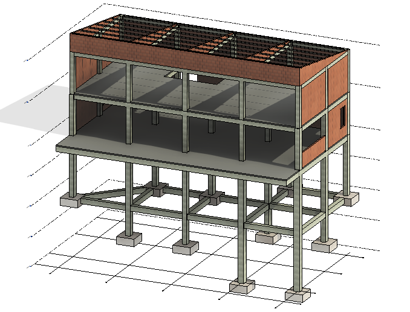
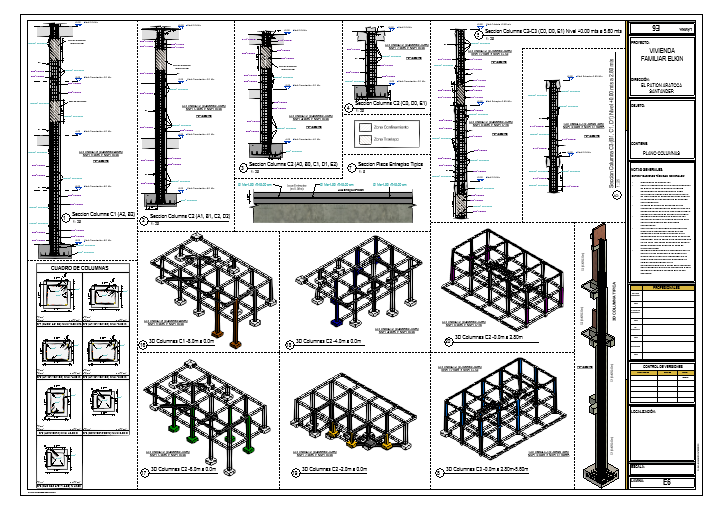
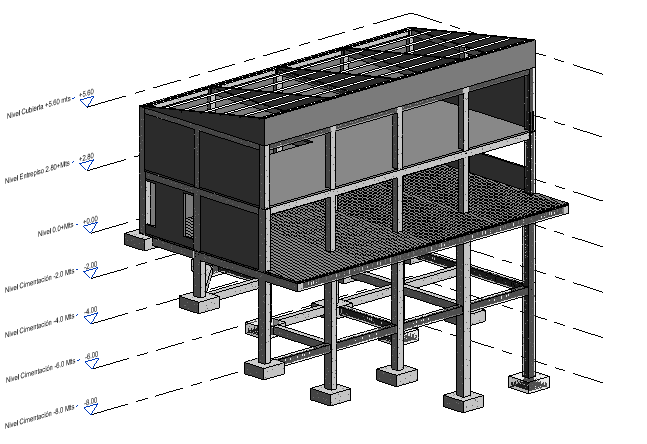
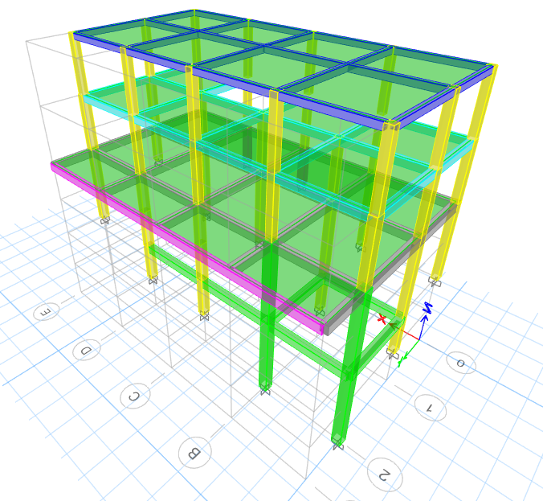
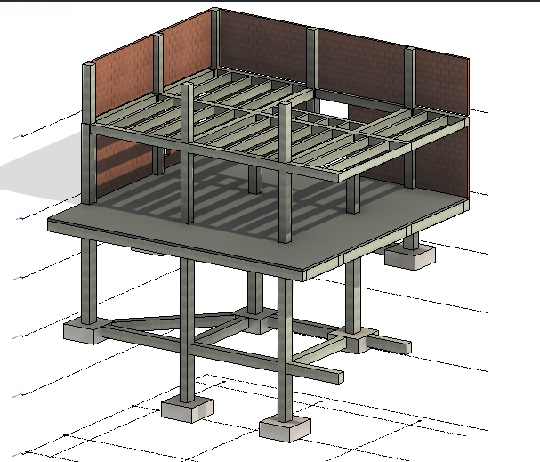

Casa Unifamiliar E.P | Estructura en pendiente extrema

Resumen ejecutivo
La Casa Unifamiliar E.P es un proyecto de vivienda de lujo desarrollado en un terreno con pendiente extrema hacia el Cañón del Chicamocha, condición que impuso exigencias estructurales poco convencionales y un alto nivel de análisis técnico. El reto principal consistió en resolver una implantación segura sobre una topografía abrupta, manteniendo viabilidad arquitectónica, estabilidad global y control de deformaciones. La solución estructural se apoyó en columnas esbeltas de concreto y un sistema de arriostramiento diseñado para reducir la vulnerabilidad frente al pandeo y mejorar el comportamiento lateral del conjunto. El resultado fue una propuesta estructural eficiente, adaptable al terreno y alineada con las exigencias de una vivienda de alto estándar.
Contexto y restricciones
- Uso: Vivienda unifamiliar de lujo.
- Condición del sitio: Ladera con pendiente extrema hacia el Cañón del Chicamocha.
- Restricción clave: Resolver una estructura elevada con apoyos esbeltos y alta exposición geométrica.
- Desafío principal: Controlar estabilidad global, desplazamientos y riesgo de pandeo.
- Criterios: Seguridad sísmica, servicio, rigidez lateral y compatibilidad con la arquitectura.
Solución estructural
La solución estructural fue planteada mediante un sistema en concreto reforzado adaptado a las condiciones topográficas del lote, con columnas de gran esbeltez en los sectores más desfavorables del terreno. Debido a la altura libre y a la condición de ladera, fue necesario complementar el sistema con elementos de arriostramiento orientados a mejorar la estabilidad lateral y reducir los efectos de segundo orden. El planteamiento buscó asegurar una transmisión racional de cargas hacia la cimentación, mantener una respuesta estructural consistente frente a cargas gravitacionales y sísmicas, y controlar deformaciones que afectaran tanto la seguridad como el comportamiento en servicio.
Desempeño estructural
El análisis estructural se enfocó en verificar la estabilidad del sistema bajo combinaciones de carga gravitacional y sísmica, con especial atención a los efectos de esbeltez, desplazamientos laterales y comportamiento global de la estructura en condición elevada. La presencia de columnas altas hizo necesario revisar con detalle el riesgo de pandeo, los efectos P-Delta y la contribución del arriostramiento en la reducción de deformaciones. Este enfoque permitió consolidar una solución capaz de responder de forma segura y racional a una de las condiciones topográficas más exigentes del portafolio.
Galería



